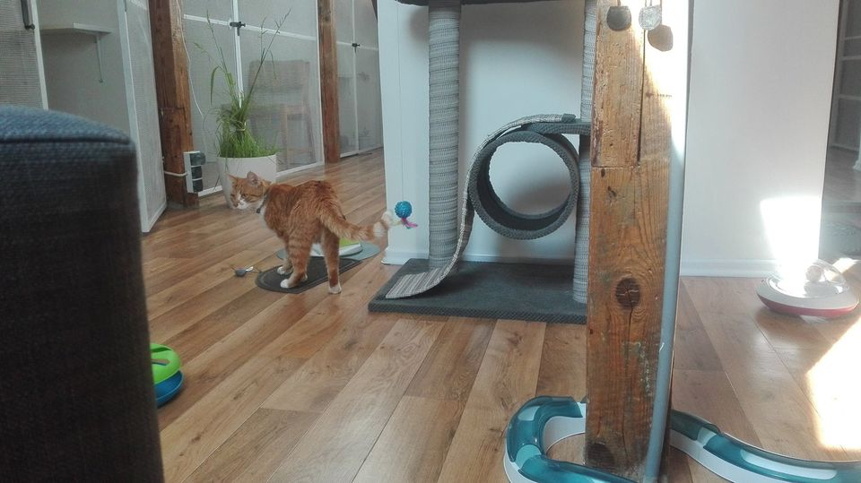
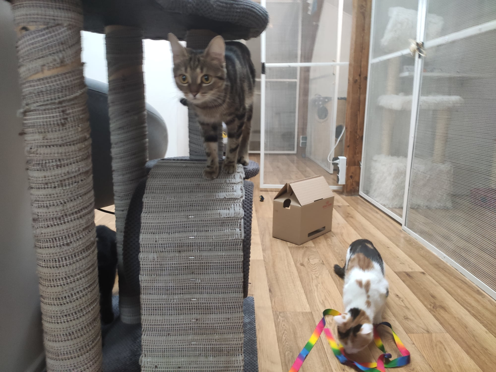

Nasz hotel znajduje się w spokojnej okolicy. Dla naszych podopiecznych przeznaczone jest całe poddasze domu jednorodzinnego. Koty mają do dyspozycji 8 w pełni wyposażonych, bezpiecznych boksów o powierzchni od 5 do 7 m² oraz część wspólną, na którą są pojedynczo (lub w przypadku zgody i aprobaty poszczególnych właścicieli -wspólnie) wypuszczane w celu wybiegania się). Zapewniamy troskliwą, domową opiekę 24 godziny na dobę. Posiadamy odpowiednią wiedzę o kocich potrzebach i zwyczajach. Koci Hotel gwarantuje, że każdego kota, pozostawionego nam w opiece, otoczymy najlepszą możliwą opieką, czule dbając o jego dobry nastrój, zdrowie, bezpieczeństwo oraz dobre i higieniczne warunki pobytu.
 
Kontakt: Telefon: 72927301 E-mail: khotel.bel@gmail.com